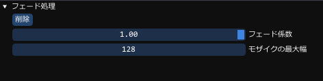

ComponentFilterFadeとは
画面をモザイク描画にできるFilterFade機能です同じような機能を実装し、利用することでクオリティアップが見込めます
利用方法として
GUIには、次のような設定項目があります。

| フェード係数 | アルファによるフェード段階 |
|---|---|
| モザイクの最大幅 | モザイクの最大の大きさ |
ComponentTargetTrackingの使用方法
SceneTestChangeSceneのような使い方が良いと思われます次のシーンへ行く前に、FadeOutをして、終了するまで待ち、
その後別のシーンにて、FadeInで待つ感じになるかと思います。
コンポーネントの作成方法
auto fade = obj->AddComponent<ComponentFilterFade>();
コンポーネントの取得方法
if (auto fade = obj->GetComponent<ComponentFilterFade>())
{
// objにFilterFadeコンポーネントがある場合はこのスコープでfadeとして使用することができます
}
フェードアウト開始
float フェードアウト時間 = 0.5f;
fade->StartFadeOut( フェードアウト時間 ); // フェードアウト時間は省略できます (0.5秒となります)
フェードアウト中かチェック
if (fade->IsFadeOut())
{
// フェードアウト中ならばここに来ます
}
フェードイン開始
float フェードイン時間 = 0.5f;
fade->StartFadeIn( フェードイン時間 ); // フェードイン時間は省略できます (0.5秒となります)
フェードイン中かチェック
if (fade->IsFadeIn())
{
// フェードイン中ならばここに来ます
}
フェードが完全に終了しているかチェック
if (fade->IsFinishFade())
{
// フェードイン中、アウト中などまだ処理が残っている場合ここに来ます
}